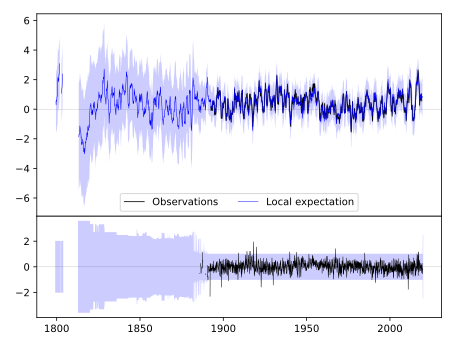
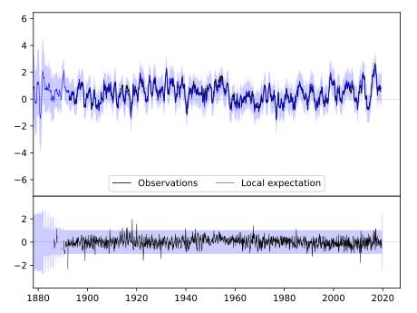
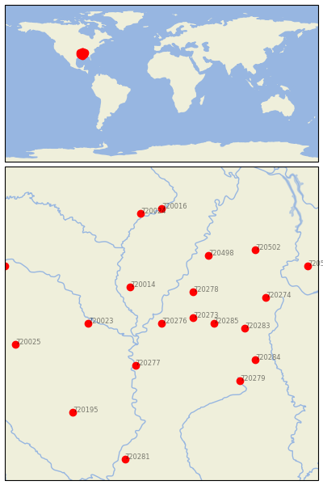

CLARKSDALE [USA]


| Neighbour | Name | Country | Distance | Lon/Lat | Years |
|---|
| 720276 | CLARKSDALE | USA | 2 | -90.6, 34.2 | 1885-2019 |
| 720273 | BATESVILLE 2 SW | USA | 56 | -90.0, 34.3 | 1882-2019 |
| 720278 | HERNANDO | USA | 86 | -90.0, 34.8 | 1882-2019 |
| 720285 | WATER VALLEY | USA | 91 | -89.6, 34.2 | 1889-2019 |
| 720014 | BRINKLEY | USA | 95 | -91.2, 34.9 | 1883-2019 |
| 720277 | GREENVILLE | USA | 100 | -91.1, 33.4 | 1884-2019 |
| 720023 | PINE BLUFF | USA | 128 | -92.0, 34.2 | 1883-2019 |
| 720283 | PONTOTOC EXP STN | USA | 147 | -89.0, 34.1 | 1889-2019 |
| 720498 | COVINGTON 3 SW | USA | 166 | -89.7, 35.5 | 1883-2019 |
| 720284 | STATE UNIV | USA | 183 | -88.8, 33.5 | 1886-2019 |
| 720279 | LOUISVILLE | USA | 185 | -89.1, 33.1 | 1888-2019 |
| 720274 | BOONEVILLE | USA | 191 | -88.6, 34.7 | 1889-2019 |
| 720502 | JACKSON EXP STN | USA | 226 | -88.8, 35.6 | 1891-2019 |
| 720024 | POCAHONTAS 1 | USA | 236 | -91.0, 36.3 | 1889-2019 |
| 720016 | CORNING | USA | 244 | -90.6, 36.4 | 1891-2019 |
| 720195 | CALHOUN RSCH STN | USA | 246 | -92.3, 32.5 | 1888-2019 |
| 720025 | PRESCOTT 2 NNW | USA | 261 | -93.4, 33.8 | 1882-2019 |
| 720508 | WAYNESBORO | USA | 283 | -87.8, 35.3 | 1884-2019 |
| 720281 | NATCHEZ | USA | 296 | -91.3, 31.6 | 1799-2019 |
| 720026 | SUBIACO | USA | 300 | -93.6, 35.3 | 1884-2019 |